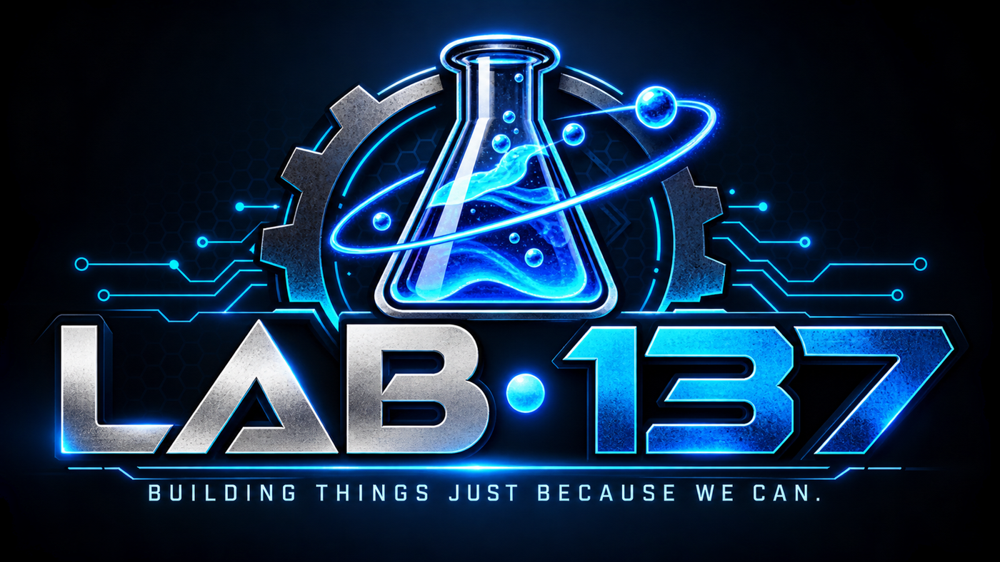

📦
Live web app
FreightMath
Track pallets, changing crew sizes, labor-hours, and productivity without reconstructing a shift from memory.
Launch FreightMath ↗
A home for practical utilities, ridiculous games, and ideas too interesting not to try. Building things just because we can.
Small tools built to solve real problems.
Track pallets, changing crew sizes, labor-hours, and productivity without reconstructing a shift from memory.
Launch FreightMath ↗A warehouse backroom operations tracker for staffing, pallet processing, truck progress, and shift reporting.
Launch Backroom Ops ↗Because sometimes the best reason to build something is that it's funny.
Fire rubber bands, dodge Danny’s return fire, collect pizza powers, and survive the managers. Three levels, Ninja unlocks, and unpredictable backroom chaos.
Play Boss Shift ↗Sort real merchandise, build combos, and survive increasingly chaotic shifts. Pizza boosts, arcade sounds, and questionable corporate wisdom.
Play Backroom Blitzz ↗A chaotic backroom-inspired arcade shooter. Managers, mayhem, and the occasional pizza.
Get the Windows release ↗A workplace-inspired platformer with hazards, coffee, and an exit worth reaching.
AI, simulations, science, and interesting detours.
No fixed roadmap. Just projects that start with “I wonder what happens if…”
Lab-137 is an independent collection of projects: some practical, some playful, and some that might not make sense until you try them. No grand corporate mission. Just making things and seeing where they go.